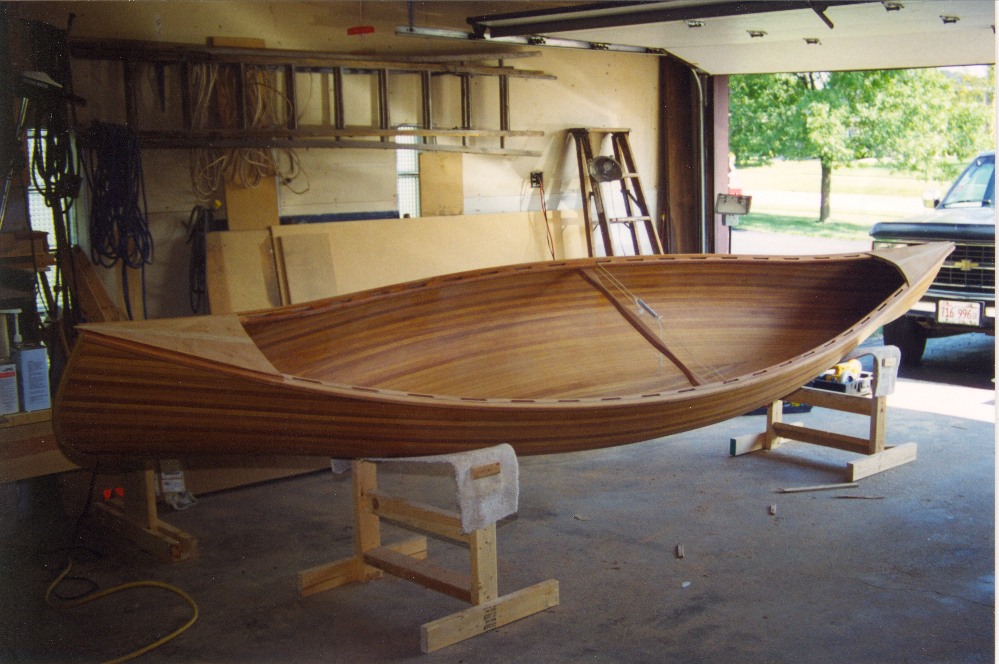
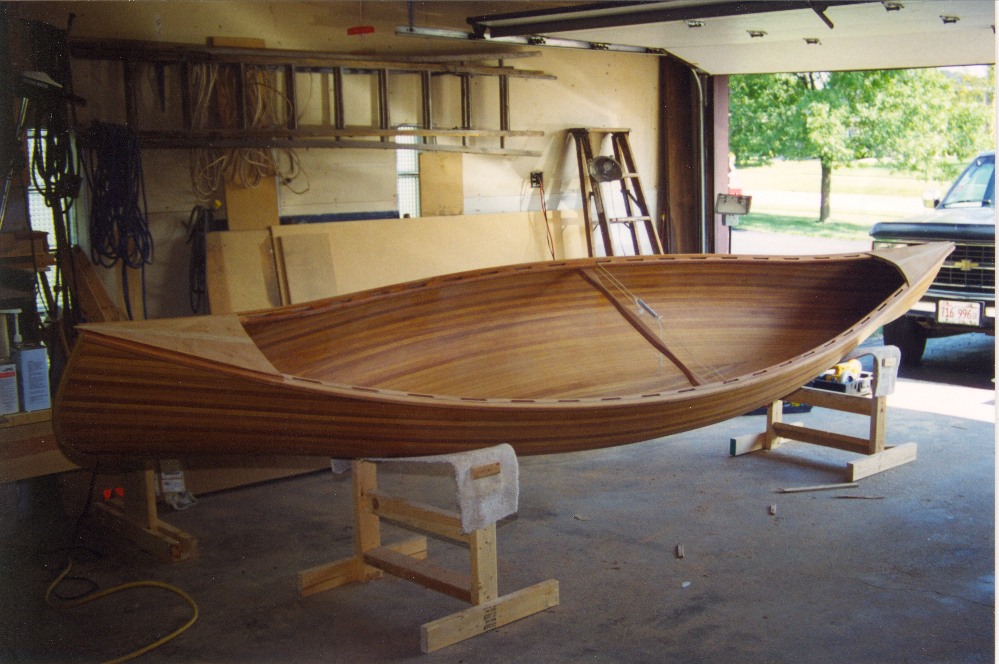
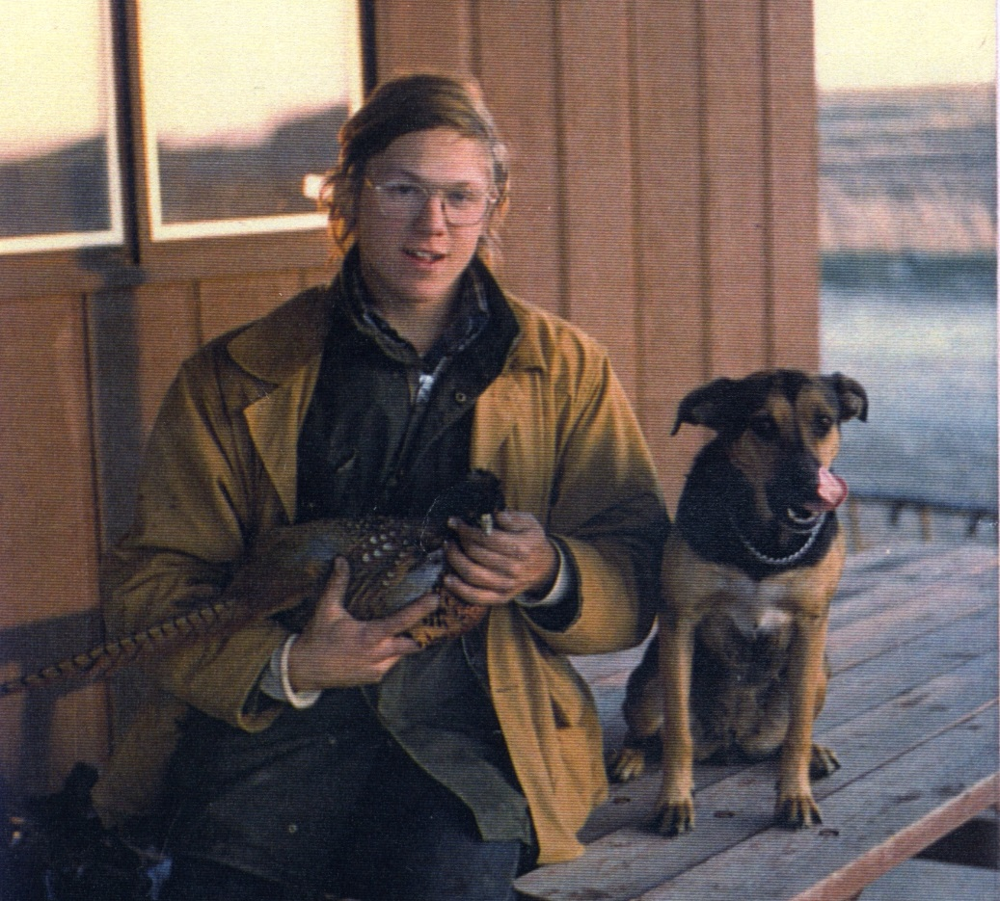

About Us
I started my wood working career at an early age, a desire that never left me. Throughout my life I have built all kinds of furniture,
even a 16' cedar strip canoe. As a young adult, I was a carpenter contractor, then became a General Contractor building many homes and room addition around the
south suburbs of Chicago. Towards the end of my career in the trades, I started a custom staircase business building staircases for 15 years.
 


I started shooting a shotgun at an early age as well. Moving from the city to the country, it gave me the opportunity
to do a lot of hunting. I bought my first shotgun at the age of 16 through the Sears catalog! Later in life I was invited to shoot a
NSCA tournament in 2001 with some friends of mine and I never looked back. We were shooting a tournament every weekend, sometimes 2 or even more and
eventually, made it to Master Class.
I soon realized that if I wanted to get better I would need to take some lessons. I found John Woolley, a world class instructor. I know without a doubt,
I would not have excelled in the sport if it wasn't for Johns help. After taking lessons from John, we realized that my gun didn't fit me just right.
Being a wood guy all my life I decided to modify my stock myself in order to get it to fit me better. That was the start of my gun stock building career.
It started off as a hobby then in 2006 I started Elite Custom Gunstocks. I have built hundreds of custom stock for customers all around the country, some have
even gone to Europe and South America. In October of 2020, my wife and I relocated to Punta Gorda Florida where I renamed the company "Elite Gun Fitting",
continuing to work on stock but focusing only on gun fitting evaluations, hardware installation, and stock repair work.
